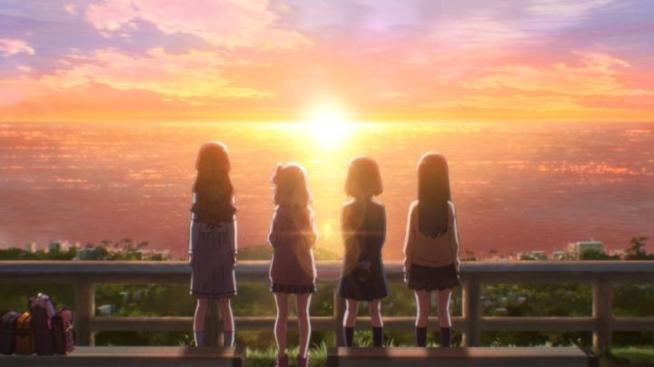

I knew virtually nothing about 2024's "Trapezium," except perhaps that it was about idols. "Idol" fantasies have become their own genre in anime, where the term refers to a musical performer / dancer / celebrity, and the stories are usually about young women living through these exciting and tumultuous careers of fame and fortune. I hadn't watched much of this genre, so this film was a starting point for me. But wow, the story was not at all what I expected. Based on a novel of the same name, the film starts with Azuma, a girl who researches other girls online at night, and makes plans to meet some of them during the day. The first goes to a different high school of a richer class, and after introducing herself, the two hit it of to be unlikely friends. This continues to two others schools, one with a shy robotics prodigy, and the other an old classmate that transferred and now does charity work. At first, they become best of friends, but Azuma clearly had some scheme to bring them all together. It's slowly revealed that she's aiming to have them form an idol group, to be "naturally" discovered and their careers launched. The hook is that the four come from different directions of their region: North, East, West and South, forming "NEWS." Without explaining the plan to the others, it actually works, and the second half of the movie shows us the rise, and fall, of their idol journey. Firstly, the creative decision to NOT tell us what Azuma is up to, but to show and hint at it, until later in the movie was clever. It sets up a mystery as to what she's doing, and why, and why not a different way, all of which is explained eventually. Props to the director for that.But more importantly, Azuma is at the center of this story, and is shown to be maticulous and vain, and obsessive to a fault. In her research to find the right girls, she searches for the cutest girls in the region, and not the other abilities or skills they have. While she acts like she's interested and wants to be friends, she's secretly checking off boxes to a list, and it becomes clear that she doesn't value friendship at all. In one scene, she volunteers the four for a charity event, but when she learns they'll be separated and not shown together on camera, she mutters out loud "what's the point?" The movie briefly addresses some of the ridiculous expectations of idols, such as being "pure" and not having any romantic relationships. When one is caught with a boyfriend, despite Azuma's careful background checks, she angrily states she'd never had been friends had she known the girl was dating... right after the girl tries to control her tears as the manager resolves the issue by breaking up with the boyfriend. This industry is infamous for being cruel, but Azuma manages to be even crueler.  Inevitably, the group cracks under pressure from work and school, and being in the public eye. After the physical and emotional stress, the group is doomed to break up, and Azuma is left looking like the worst of the bunch, her true colours fully visible. Shockingly, the movie is kind to her fate: while Azuma learns her lesson and regrets hurting her friends, she's also commended, as if her "selfish ambition" was a "positive" trait. An epilogue years later shows things work out for all of them, with Azuma achieving her dream of being a long-running idol. It's still a sweet story of friendship, but my gut reaction is that Azuma got off far too easily. This was probably the point of the story all along, not to be a "cute-girls-doing-cute-things" adventure, or even a cautionary tale. It's meant to show how harsh the reality (while still being a relatively tame all-ages film) of the idol industry and the fame it brings, and to show the type of person you must be, or will become, if you obsessively chase after it. It might give new appreciation and ward away some girls, while also convincing others that if they do try that hard, with abandon of what they risk losing in the process, they can succeed. It's a deep, but mixed, message that I'm still pondering.Animated by CloverWorks, the production isn't much to write home about. Backgrounds and character designs are somewhat plain but do the job. Character animation has some nice subtle detail in body movement. Unfortunately, the one big stage dance does rely on out-of-place CGI models and animation for big camera movements, but mixes in some shots with 2D animation... it feels like an extra month of production to trace 2D animation overtop the CGI models was all that was needed, but alas. You'd think the music would be a big factor, but I thought it was simply adequete. Voice acting (Japanese only in the theatre screening I saw) is par for the course, but due to the complexity of the drama, it earns its weight. "Trapezium" is not your ordinary idol story. While the production values are lacking and the message might be divisive, it's a surprisingly mature and sober story about obsession over getting your dream career. Because the story seems so original by comparison to other works, I'd recommend it for that alone.
- "Ani" More reviews can be found at : https://2danicritic.github.io/ Previous review: review_Towanoquon Next review: review_Treasure_Planet